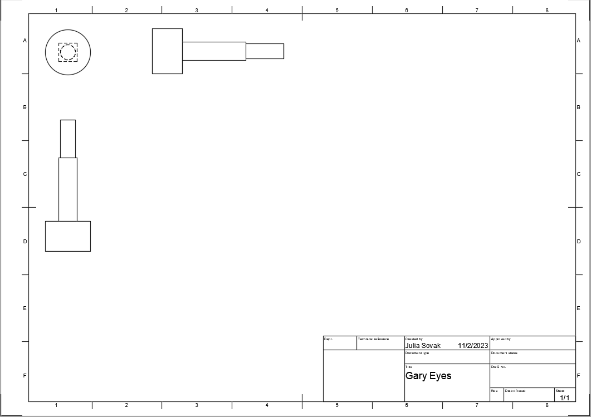
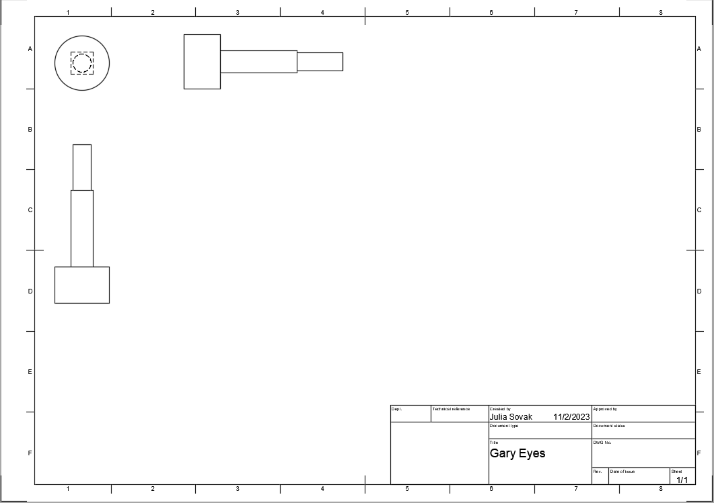

Keychain Project Description
Our first project we made in Advance Engineering class was a keychain with out names on it. We made it in Fusion 360. This was only my second time making something in Fusion so it was challenging at first but I was able to complete it in the end. We then 3D printed them in class.
Train Project
Our second project we made in Advance Engineering class was our train project. Our goal for this project was to each make a train that had an overal theme. My team's theme was Spongebob. I made the Gary the Snail themed car, Aidan made the Patrick Star themed car, Ian made the Kraby Patty themed car, and Tristian made the Kursty Krab themed car. My design process was to first make the snail body. I sketched out a simple design of the snail body and then used the filet tool to smooth out the edges. Then, I made my second part which was the shell, then made the eyes that will insert into the snail body. The guidelines were that each train car had to have atleast 3 different unique parts so those were my 3. My first major problem was getting the eyes the right size to put into the body. Each time I printed it out, it was either too big or too small. When you modle something in Fusion 360 and it fits together, there is a large chance that it won't fit that same way when you print it out and that is exactly what happened. Another problem was that my screw to screw the shell onto the body was too small and very hard to work with. To fix this, I changed the screw from size M2 to M3 and that fixed it. Another problem was that Mr. Kaiser doesn't have any flat head M3 screws. This is a problem because in order to screw the shell on, the screw needs to be flat so that the wheel body can screw onto the snail body nice and flesh. To fix this problem, I cut out a small cylinder on the snail body to let the oval head screw go into the bdoy. This artificially makes the oval head into a flat head but you would never tell the difference because it is covered by the shell and wheel body.

 
